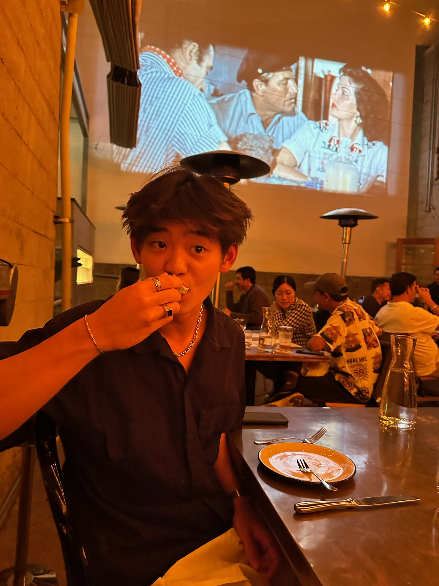

James Chong
Junior | Computer Science
Hey! I'm born and raised in Kuala Lumpur, Malaysia. In my freetime, I mostly do photography, rock-climbing, and make lots of coffee.
Favourite Places to eat in Berkeley
- Noodle Dynasty
- Chipotle
- My kitchen

Puppies
Reading Responses
-
1. What is something you learned from this article? (2-3 sentences)
There are so many factors that go into the design of apps we use everyday.
-
2. What was your favorite part of this article? (2-3 sentences)
Learning that if we are simply intentional in doing so, we can often see new thought out details in app design.
-
3. Copy and paste a quote you found compelling, interesting, or cool.
"It’s not just “Add a Tweet”, it’s “Add another Tweet”."
-
4. On a scale from 1 to 10, how much did you enjoy reading this article? If you scored below a five, please briefly explain why.
8 - interesting read